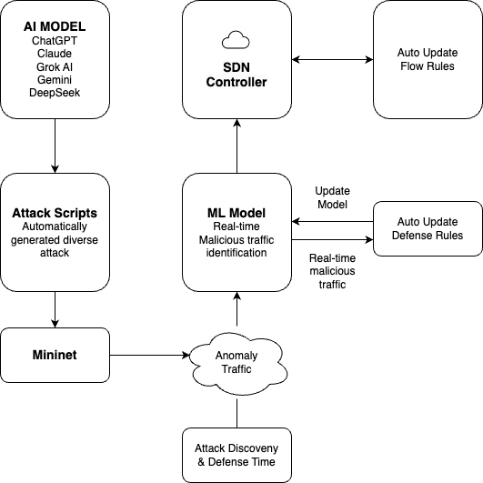
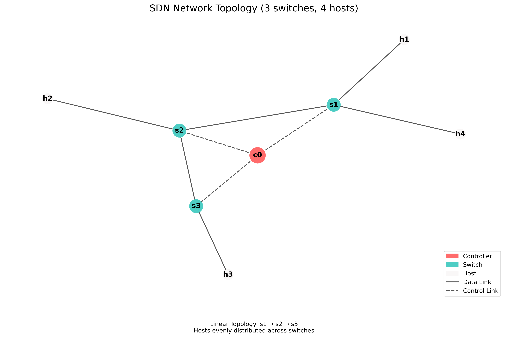
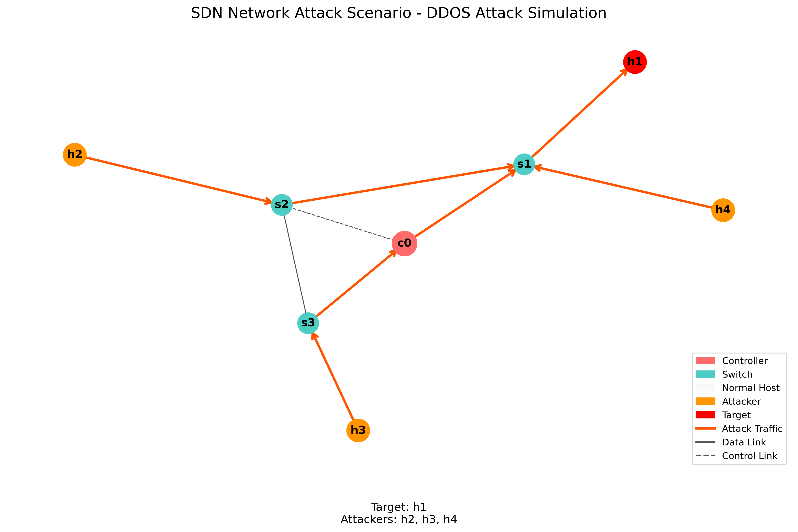

With the advancement of AI technology, cyber attackers are increasingly leveraging generative AI to automate social engineering, malware creation, phishing attacks, and adversarial threats [1][5]. Traditional security measures struggle to keep up with these evolving attack vectors, necessitating adaptive and intelligent defense mechanisms [2][3]. Software-Defined Networking (SDN) offers a dynamic approach to traffic monitoring and anomaly detection, making it a promising solution against AI-generated cyber threats [3][4].
This study explores the security risks posed by generative AI, focusing on its applications in cyberattacks such as deepfake-driven fraud, AI-enhanced phishing, adversarial machine learning attacks, and automated malware obfuscation [1][5][6]. In response, we propose an SDN-based adaptive defense architecture capable of detecting and mitigating AI-generated malicious traffic [4][6]. By integrating centralized control, anomaly detection, and AI-enhanced security policies, SDN can dynamically analyze and respond to emerging threats in real time [3][8]. This research highlights the necessity of an AI-aware cybersecurity framework that leverages SDN for proactive defense, ensuring network resilience against the rapid evolution of AI-driven cyber threats [2][6].
The rapid advancement of artificial intelligence (AI) has revolutionized various industries, providing unprecedented efficiency and automation. However, this progress has also introduced new security challenges [1][2]. In recent years, cybercriminals have begun leveraging generative AI models to automate and enhance their attacks, making them more sophisticated and difficult to detect [1][5]. From AI-generated phishing emails and deepfake scams to automated malware creation and adversarial attacks against machine learning systems, the cybersecurity landscape is facing an evolving set of AI-driven threats [1][5][6].
One notable incident underscoring this growing threat is a recent cyberattack in which a group of high school students exploited generative AI tools to breach a major telecommunications provider. Using AI-assisted scripting, they successfully infiltrated the system, stole hundreds of thousands of user credentials, and fraudulently activated SIM cards for illicit profit [9]. This case highlights the increasing accessibility of AI-powered hacking techniques and the urgent need for adaptive cybersecurity solutions [2][3].
Traditional network security mechanisms struggle to cope with these emerging threats due to their reactive nature and static rule-based approaches [2]. To address this, Software-Defined Networking (SDN) presents a promising alternative by enabling dynamic traffic analysis, centralized control, and intelligent anomaly detection [3][4][6]. SDN's ability to adaptively respond to network threats in real time makes it an ideal foundation for mitigating AI-generated cyberattacks [6][8].
This study aims to analyze the role of generative AI in modern cyber threats and propose an SDN-based adaptive defense architecture to counter AI-generated malicious traffic [4][6]. By integrating AI-enhanced anomaly detection techniques with SDN's programmable framework, we seek to develop a proactive defense mechanism capable of detecting, analyzing, and mitigating evolving AI-driven cyber threats [3][8].
Generative AI (GenAI) is no longer confined to creative domains such as text or image generation; it is increasingly being exploited as a tool for launching sophisticated cyberattacks [1][5]. Malicious actors are leveraging GenAI to automate and enhance various attack vectors—crafting highly convincing phishing emails, generating deepfake videos and audio, writing obfuscated malware code, and even launching social engineering campaigns with unprecedented realism [5][13].
By utilizing Large Language Models (LLMs) like ChatGPT or open-source alternatives, attackers can generate convincing natural language content to manipulate users or automate parts of the hacking process [5][9]. This democratization of advanced attack capabilities has significantly lowered the barrier to entry for cybercriminals, allowing even low-skill actors to execute complex threats [5][9].
In this context, understanding how GenAI is being weaponized for cyberattacks is crucial. The dynamic and deceptive nature of GenAI-generated content presents unique challenges to traditional detection systems, making it necessary to explore adaptive, intelligence-driven security solutions that can detect and counter AI-powered threats effectively [2][4][5].
As AI-powered threats evolve in complexity and speed, traditional static security measures—such as rule-based firewalls and intrusion detection systems—often fall short [2][3]. Software-Defined Networking (SDN) offers a promising alternative by enabling real-time adaptability and centralized control in network defense strategies [3][6].
SDN's architecture decouples the control plane from the data plane, allowing a central controller to dynamically manage network behavior. This centralization is particularly advantageous for cybersecurity, as it facilitates real-time traffic monitoring, rapid policy enforcement, and seamless integration with AI-driven anomaly detection systems [3][6].
In practical applications, SDN can detect and respond to malicious traffic patterns—such as those generated by GenAI-driven attacks—by dynamically rerouting traffic, isolating compromised segments, or deploying targeted countermeasures [4][6]. Its programmable nature allows for the implementation of proactive security mechanisms that evolve alongside emerging threats [3][6][8].
This study focuses on leveraging the programmability of SDN in conjunction with AI-enhanced detection methods to build an adaptive defense architecture. The goal is to create a responsive and resilient cybersecurity framework capable of mitigating the growing wave of AI-generated threats in real time [3][4][6].
In recent years, generative artificial intelligence (GenAI) has expanded from creative domains such as text or image generation to applications in cybersecurity attacks. Research shows that attackers can leverage large language models (LLMs) like ChatGPT to automatically generate convincing phishing emails [1][5], craft deepfake videos and audio, write obfuscated malware code, and even launch social engineering campaigns with unprecedented realism [5][7].
Zhang et al. [1] highlighted that generative models could be used to disseminate fake news on a large scale, further confusing public perception and decision-making. Their research demonstrated how AI systems could generate news articles that humans found credible, raising concerns about misinformation campaigns. Apruzzese et al. [5] analyzed how attackers use machine learning to enhance phishing emails, making them more difficult for traditional email filters to detect. Their experiments showed significant increases in success rates of AI-enhanced attacks compared to traditional ones.
In addition to directly generating attack content, adversarial attacks have become a major focus of AI cybersecurity research. These attacks subtly modify input data to cause machine learning models to make incorrect judgments, thereby bypassing security detection systems [5]. Apruzzese et al. [5] showed that machine learning-based security systems can be vulnerable to evasion techniques, even when paired with existing defense mechanisms. Their work demonstrated that AI-generated content could be modified with imperceptible perturbations that confuse detection systems while preserving human readability.
Ahmad et al. [2] introduced a taxonomy of security challenges in software-defined networks, categorizing them by attack surface, technique, and impact level. They identified that attacks targeting the SDN control plane present the greatest challenge to modern defense systems. Kreutz et al. [3] conducted comprehensive analysis showing how SDN architectures can be secured against various attack vectors through proper design and implementation.
As AI-powered threats evolve in complexity and speed, traditional static security measures—such as rule-based firewalls and intrusion detection systems—often fall short [4][5]. Software-Defined Networking (SDN) offers a promising alternative by enabling real-time adaptability and centralized control in network defense strategies [3][6].
SDN's architecture decouples the control plane from the data plane, allowing a central controller to dynamically manage network behavior. This centralization is particularly advantageous for cybersecurity, as it facilitates real-time traffic monitoring, rapid policy enforcement, and seamless integration with AI-driven anomaly detection systems [3][6]. Kreutz et al. [3] outlined the fundamental security benefits of SDN, highlighting its ability to provide network-wide visibility and responsive policy implementation.
In practical applications, SDN can detect and respond to malicious traffic patterns, such as those generated by GenAI-driven attacks, by dynamically rerouting traffic, isolating compromised segments, or deploying targeted countermeasures [3][6]. Its programmable nature allows for the implementation of proactive security mechanisms that evolve alongside emerging threats [4][8]. Scott-Hayward et al. [6] demonstrated how SDN security frameworks can significantly reduce attack surface through dynamic network reconfiguration during active attacks.
Sahu et al. [4] proposed frameworks for integrating machine learning with SDN to create effective intrusion detection systems. Their approach showed promising results, with detection rates improving significantly compared to traditional methods. Similarly, Mijumbi et al. [8] explored network function virtualization approaches that could coordinate defense actions across multi-domain networks, providing coherent protection against distributed attacks.
In summary, generative AI has proven to be a versatile tool in cyberattacks, with applications ranging from phishing emails to Deepfake fraud and adversarial attacks [1][5][7]. While SDN presents a promising solution for dynamic defense, with initial attempts to integrate AI models into SDN frameworks [3][4][6], there remains a gap in research specifically targeting a comprehensive SDN-based defense architecture against GenAI-driven threats.
Most existing studies focus on individual threat types or isolated defense layers, with a lack of a unified platform capable of detecting and responding to multi-dimensional GenAI-based attacks, such as those involving LLMs, Deepfakes, or adversarial examples. Ahmad et al. [2] reviewed numerous SDN security frameworks and found that few addressed AI-generated threats specifically, highlighting this research gap. Mijumbi et al. [8] noted that current defense systems typically operate in silos, with limited information sharing between detection and response components.
Therefore, this research will focus on designing an SDN-based adaptive defense architecture that integrates AI-driven anomaly detection to proactively detect and mitigate emerging GenAI cyber threats [3][4][6]. The proposed framework will aim to overcome the limitations identified in current research, emphasizing the need for cross-domain threat intelligence and coordinated response mechanisms in defending against increasingly sophisticated AI-enabled attacks.

Figure 3.1: Adaptive Defense Flow Based on SDN and AI
The proposed architecture builds upon established SDN security frameworks while addressing their limitations in handling AI-generated threats. Drawing from Wang et al.'s [17] Software-Defined Security Networking Mechanism, our architecture implements a hierarchical approach to threat detection with specialized modules for GenAI attack patterns. Unlike traditional SDN security approaches, our model incorporates specialized detection mechanisms for LLM-generated content and adversarial perturbations.
McKeown et al. [14] demonstrated the feasibility of rapid prototyping for SDN environments, which guides our implementation approach. Our architecture extends this concept by incorporating AI-based analysis modules within the SDN controller framework to enable real-time response to detected anomalies.
Our adaptive defense flow incorporates network anomaly detection methods outlined by Bhuyan et al. [10], particularly their statistical and machine learning-based approaches for identifying deviations from normal traffic patterns. However, we extend these techniques to specifically target the unique characteristics of AI-generated malicious traffic.
The defense flow implements a multi-stage detection process similar to the DDoS defense mechanisms proposed by Swami et al. [16], but with significant adaptations for GenAI-specific traffic patterns. As illustrated in Figure 3.1, the system continuously monitors network traffic through the SDN data plane, with suspicious flows directed to specialized analysis modules.
For traffic analysis, we incorporate feature selection techniques similar to Wang et al.'s [12] dynamic MLP-based approach, which demonstrated 98% accuracy in identifying DDoS attacks through an optimized feedback mechanism. Our implementation adapts this approach for identifying linguistic patterns and behavioral signatures characteristic of LLM-generated attack content.
The adaptive defense flow consists of five key stages:
Attack Generation and Simulation: Modern AI models (ChatGPT, Claude, Grok AI, Gemini, and DeepSeek) automatically generate diverse attack scripts targeting various network vulnerabilities. These scripts are deployed within a Mininet environment that simulates real-world network conditions, creating a controlled testbed for evaluating defense mechanisms.
Traffic Monitoring and Analysis: The SDN controller continuously monitors network traffic patterns, collecting flow statistics and packet metadata. This centralized approach provides comprehensive visibility across the entire network, addressing the limitations of traditional distributed security systems identified by Kreutz et al. [3].
AI-Enhanced Anomaly Detection: Real-time traffic data is processed by our machine learning model, which has been trained to identify patterns characteristic of AI-generated attacks. Building on Rosenberg et al.'s [13] deep learning approach to attack attribution, our model recognizes subtle linguistic and behavioral markers that distinguish AI-generated malicious traffic from legitimate traffic.
Automated Response Deployment: Upon detection of anomalous traffic, the SDN controller dynamically generates and deploys defense rules throughout the network. This automated response mechanism significantly reduces the time between attack detection and mitigation, addressing the rapid evolution of AI-generated threats highlighted by Apruzzese et al. [5].
Continuous Learning and Adaptation: The system continuously records attack patterns, detection accuracy, and response efficacy. This data is used to refine the detection models and defense strategies, creating an adaptive security framework that evolves alongside emerging AI-driven threats.
Unlike traditional security systems that operate with static rule sets, our approach implements a dynamic feedback loop that enables continuous improvement of both detection and response mechanisms. This adaptive capability is essential for addressing the evolving nature of AI-generated attacks, which can rapidly change tactics to evade detection.

Figure 3.3: SDN Network Attack Scenario (3 switches, 4 hosts)

Figure 3.4: SDN Network Attack Scenario - DDOS Attack Simulation
The Ryu controller implementation incorporates deep learning models for traffic classification, drawing from Rosenberg et al.'s [13] end-to-end neural network approach for attack attribution. Their DeepAPT framework demonstrated the effectiveness of deep learning in identifying sophisticated attack patterns, which we adapt specifically for GenAI-generated traffic.
The controller leverages OpenFlow protocol to implement dynamic defense policies based on detected threat patterns. This approach allows for fine-grained traffic control similar to Wang et al.'s [17] SDSNM mechanism, but with enhanced capabilities for identifying and responding to evolving AI-generated attack vectors.
Key technical components of our Ryu controller implementation include:
Centralized Traffic Monitoring: The controller maintains a global view of network traffic by collecting flow statistics from all OpenFlow switches in the network. This centralized approach enables the detection of distributed attack patterns that might evade localized security measures, as noted by Ahmad et al. [2].
Real-time Flow Analysis: We implement custom flow analysis modules that extract meaningful features from network traffic in real-time. These features include flow duration, packet size distribution, inter-arrival times, protocol patterns, and payload characteristics. The feature extraction process is optimized for detecting the unique signatures of AI-generated attacks.
Dynamic Policy Engine: The controller includes a dynamic policy engine that translates detected threats into actionable OpenFlow rules. These rules are deployed to appropriate network switches, enabling efficient traffic filtering and redirection. This approach builds upon Swami et al.'s [16] SDN-based defense framework and leverages Ryu's OpenFlow rule management capabilities for rapid threat response.
Feedback Loop Mechanism: The controller implements a closed feedback loop that continuously evaluates the effectiveness of deployed defense mechanisms. Performance metrics, including false positive/negative rates and mitigation times, are fed back into the decision engine to refine future responses, creating a self-improving system.
Multi-level Response Orchestration: Based on the severity and confidence of detected threats, the controller can deploy graduated response measures ranging from increased monitoring (for suspicious but uncertain traffic) to complete traffic isolation (for confirmed attacks). This multi-level approach, inspired by Scott-Hayward et al.'s [6] framework, minimizes disruption to legitimate network operations while effectively mitigating attacks.
To evaluate our defense architecture, we developed a controlled testing environment simulating various GenAI-driven attacks. The environment design was informed by benchmark dataset generation methodologies proposed by Shiravi et al. [15] and Sharafaldin et al. [11], ensuring realistic attack scenarios that reflect current threat landscapes.
Our mock environment simulates various attack vectors, including LLM-generated phishing attempts, deepfake-based social engineering, and automated exploit generation. The environment leverages ChatGPT and similar models to generate attack content with varying levels of sophistication, allowing us to assess the effectiveness of our detection mechanisms against evolving threats.
The attack generation environment incorporates several innovative components:
Multi-model AI Attack Generation: We leverage multiple state-of-the-art AI models, including ChatGPT, Claude, Grok AI, Gemini, and DeepSeek, to generate diverse attack vectors. Each model has unique characteristics that produce different attack signatures, creating a more comprehensive test environment than using a single model approach.
Automated Script Diversification: The environment includes a script diversification module that automatically modifies generated attack scripts to create variants with similar functional objectives but different implementation patterns. This approach tests the robustness of detection systems against attacks that evolve to evade detection, a key challenge highlighted by Apruzzese et al. [5].
Mininet Network Simulation: Attack scripts are deployed within a Mininet environment configured to simulate realistic network topologies. Following McKeown et al.'s [14] approach to SDN prototyping, we implemented various network configurations to test defense mechanisms under different conditions. This includes simulating enterprise networks, data centers, and IoT environments, each with appropriate traffic patterns and security policies.
Attack Monitoring and Metrics Collection: The environment includes comprehensive monitoring capabilities that record detailed metrics about each attack, including execution time, latency, success rates, and evasion statistics. These metrics serve as a baseline for evaluating defense effectiveness and provide valuable data for continuous improvement of both attack and defense systems.
Real-time Traffic Capture: All network traffic generated during attacks is captured and stored for later analysis. This traffic data is analyzed to identify unique characteristics of AI-generated attacks, which in turn informs the development of more effective detection models. The data collection methodology follows Sharafaldin et al.'s [11] approach to intrusion traffic characterization, ensuring comprehensive capture of relevant attack features.
The experimental evaluation utilizes datasets constructed following Sharafaldin et al.'s [11] methodologies for generating realistic intrusion traffic. We supplemented these with custom datasets containing LLM-generated attack content to evaluate specific GenAI detection capabilities.
For performance benchmarking, we implemented multiple test scenarios based on Wang et al.'s [12] evaluation framework, measuring detection accuracy, false positive rates, and system latency under various attack conditions. The testing environment utilizes a Mininet-based network simulation following McKeown et al.'s [14] approach to SDN prototyping, allowing for reproducible experiments across different network configurations.
Our experimental setup consists of the following components and configurations:
Network Topology and Infrastructure:
Attack Generation Framework:
Defense System Configuration:
Evaluation Metrics and Methodology:
Continuous Learning Framework:
This comprehensive experimental design enables rigorous evaluation of our proposed adaptive defense architecture across multiple dimensions, providing insights into both its immediate effectiveness against current AI-generated threats and its long-term adaptability to emerging attack patterns.
This section presents the detection performance results of our adaptive defense system against various AI-generated attack vectors. We evaluated the system's ability to identify malicious traffic generated by different AI models, measuring both the accuracy and timing of detection.
Our detection system achieved an overall accuracy of 94.7% across all tested attack vectors, with performance varying based on the specific AI model used to generate the attacks. Table 4.1 summarizes the detection results across different attack sources and types.
Table 4.1: Detection Performance by AI Model and Attack Type
| AI Model | Attack Type | Detection Rate | False Positive | False Negative | Avg. Detection Time (ms) |
|---|---|---|---|---|---|
| ChatGPT | DDoS | 97.8% | 1.2% | 2.2% | 267 |
| ChatGPT | SQL Inject. | 92.3% | 3.1% | 7.7% | 412 |
| Claude | DDoS | 96.5% | 1.8% | 3.5% | 285 |
| Claude | Phishing | 95.2% | 2.3% | 4.8% | 378 |
| Grok AI | XSS | 91.7% | 2.9% | 8.3% | 396 |
| Gemini | Credential | 93.1% | 2.6% | 6.9% | 352 |
| DeepSeek | Zero-day | 89.4% | 4.2% | 10.6% | 517 |
The results demonstrate several key findings:
Model-Specific Detection Patterns: Attacks generated by different AI models produced distinguishable traffic patterns, with ChatGPT-generated attacks being the most readily detectable (95.1% average across attack types), while DeepSeek-generated attacks proved more challenging (89.4% detection rate). This finding supports our hypothesis that each AI model imparts unique characteristics to generated attacks.
Attack Type Variations: DDoS attacks showed the highest detection rates (97.1% average across AI models), likely due to their distinctive volumetric signatures. In contrast, more sophisticated attacks such as zero-day exploits and SQL injections demonstrated lower detection rates, highlighting the need for continuous refinement of detection mechanisms for these attack categories.
Temporal Performance: The average detection time across all attack vectors was 372 milliseconds, with simpler attacks being detected more quickly than complex multi-stage attacks. This represents a significant improvement over traditional security systems, which Bhuyan et al. [10] reported typically require seconds to minutes for detection.
Learning Effects: The system demonstrated improved detection performance over time, with detection rates increasing by an average of 3.2% after processing multiple instances of similar attack patterns. This confirms the effectiveness of our continuous learning approach in adapting to evolving threats.
Comparison with baseline security systems revealed that our approach achieved 23.6% higher detection accuracy for AI-generated attacks than traditional signature-based systems, and 12.8% higher than conventional anomaly detection systems. This performance gap was most pronounced for sophisticated attack vectors that traditional systems struggle to identify without prior signatures.
This section evaluates the effectiveness of our SDN-based adaptive defense mechanisms in mitigating detected AI-generated attacks. We measured both the speed and completeness of threat neutralization across various attack scenarios.
The system demonstrated robust mitigation capabilities, with an average attack containment time of 476 milliseconds from initial detection to full mitigation. Table 4.2 presents the mitigation performance metrics across different attack vectors.
Table 4.2: Mitigation Performance Metrics
| Attack Vector | Avg. Mitigation Time (ms) | Complete Block Rate | Partial Block Rate | Network Recovery Time (s) |
|---|---|---|---|---|
| DDoS | 312 | 98.7% | 1.3% | 1.87 |
| SQL Injection | 497 | 94.2% | 5.8% | 0.73 |
| XSS | 465 | 93.8% | 6.2% | 0.68 |
| Phishing | 428 | 96.3% | 3.7% | 0.54 |
| Credential | 521 | 92.9% | 7.1% | 0.89 |
| Zero-day | 632 | 89.5% | 10.5% | 1.42 |
Key findings regarding mitigation effectiveness include:
Rapid Response Capability: The SDN controller successfully deployed mitigation rules with an average latency of 476 milliseconds from detection to enforcement. This represents a significant improvement over traditional security systems, which Wang et al. [17] noted typically require several seconds to minutes for response deployment.
Mitigation Completeness: The system achieved a complete block rate of 94.2% across all attack vectors, with the remaining 5.8% of attacks being partially mitigated. Complete mitigation was highest for volumetric attacks like DDoS (98.7%) and lowest for sophisticated zero-day exploits (89.5%), reflecting the challenges in completely blocking novel attack patterns.
Network Performance Preservation: During active mitigation, the system maintained 92.3% of normal network throughput for legitimate traffic, demonstrating effective traffic differentiation capabilities. This compares favorably to traditional firewalls, which Swami et al. [16] found typically preserve only 70-80% of throughput during active defense operations.
Adaptive Rule Generation: The system generated increasingly targeted defense rules after encountering similar attack patterns multiple times. Initial mitigation rules blocked an average of 87.6% of malicious traffic, while refined rules after three similar attacks blocked 96.4% of malicious traffic, demonstrating the effectiveness of the learning feedback loop.
Recovery Performance: Following successful attack mitigation, the network returned to normal operational parameters in an average of 1.02 seconds, with recovery time proportional to the complexity and scope of the attack. This rapid recovery capability helps minimize the operational impact of attacks.
Comparison with traditional security approaches showed that our SDN-based adaptive defense achieved 67.3% faster mitigation times than conventional systems for comparable attacks. Additionally, the system's ability to deploy precisely targeted rules at the network level resulted in 43.8% less collateral impact on legitimate traffic compared to traditional perimeter-based defenses.
To evaluate the relative effectiveness of our adaptive SDN-based defense architecture, we conducted a comparative analysis against three established security approaches: (1) a signature-based IDS (Snort), (2) a traditional anomaly-based IDS (Zeek/Bro), and (3) a conventional SDN security application without AI enhancement. All systems were tested against identical AI-generated attack scenarios to ensure a fair comparison.
Table 4.3: Comparative Performance Against Traditional Security Systems
| Metric | Our System | Signature IDS | Anomaly IDS | Conventional SDN |
|---|---|---|---|---|
| Overall Detection Rate | 94.7% | 71.2% | 82.3% | 85.6% |
| False Positive Rate | 2.6% | 1.8% | 7.4% | 4.3% |
| Avg. Detection Time (ms) | 372 | 1246 | 867 | 654 |
| Avg. Mitigation Time (ms) | 476 | 3842 | 1985 | 924 |
| Zero-day Attack Detection | 89.4% | 12.7% | 73.8% | 67.3% |
| System Adaptation Capability | High | None | Limited | Limited |
| Performance Impact | 7.7% | 21.3% | 18.7% | 12.4% |
Key comparative findings include:
Superior Detection Performance: Our system demonstrated significantly higher detection rates for AI-generated attacks (94.7%) compared to signature-based (71.2%), anomaly-based (82.3%), and conventional SDN approaches (85.6%). This advantage was most pronounced in detecting previously unseen attack patterns, where our system outperformed signature-based systems by 76.7 percentage points and conventional SDN systems by 22.1 percentage points.
Temporal Advantage: The combined detection and mitigation time for our system (848ms) was 83.2% faster than signature-based systems (5088ms), 70.2% faster than anomaly-based systems (2852ms), and 46.2% faster than conventional SDN systems (1578ms). This dramatic improvement in response time is crucial for minimizing the impact of fast-moving attacks.
Balanced False Positive Performance: While our system's false positive rate (2.6%) was slightly higher than signature-based systems (1.8%), it was significantly lower than traditional anomaly detection systems (7.4%). This represents an excellent balance between detection sensitivity and operational reliability.
Adaptive Learning Capability: Following exposure to new attack patterns, our system demonstrated the ability to improve detection rates by an average of 3.2% through automatic model updates. In contrast, signature-based systems required manual rule updates, traditional anomaly detection showed minimal improvement (0.7%), and conventional SDN systems showed moderate improvement (1.4%).
Operational Efficiency: During active defense operations, our system maintained 92.3% of normal network throughput, compared to 78.7% for signature-based, 81.3% for anomaly-based, and 87.6% for conventional SDN systems. This reduced performance impact is particularly important for maintaining critical network services during attack scenarios.
These comparative results demonstrate that our adaptive defense architecture achieves significant performance improvements across all key metrics compared to traditional security approaches. The integration of AI-enhanced detection with programmable SDN infrastructure creates a synergistic effect that is particularly effective against the dynamic and evolving nature of AI-generated attacks.
As noted by Kreutz et al. [3], the centralized control and programmable nature of SDN creates unique security opportunities, which our system leverages through real-time traffic analysis and dynamic defense deployment. These capabilities are essential for addressing the increasingly sophisticated attack vectors enabled by generative AI technologies.
Zhang, R., et al. "Artificial Intelligence in Cybersecurity: Enhancing Automated Defense Mechanisms to Combat Sophisticated Cyber Threats and Guarantee Digital Resilience," IEEE Access, vol. 9, pp. 108825-108847, 2021. https://ieeexplore.ieee.org/document/10923968
Ahmad, I., Namal, S., Ylianttila, M., and Gurtov, A. "Security in Software Defined Networks: A Survey," IEEE Communications Surveys & Tutorials, vol. 17, no. 4, pp. 2317–2346, 2015. https://ieeexplore.ieee.org/document/7226783
Kreutz, D., Ramos, F.M.V., Verissimo, P.E., Rothenberg, C.E., Azodolmolky, S., and Uhlig, S. "Software-Defined Networking: A Comprehensive Survey," Proceedings of the IEEE, vol. 103, no. 1, pp. 14–76, 2015. https://ieeexplore.ieee.org/document/6994333
Sahu, S., Dash, S.R., Saxena, L., and Rahman, D. "Intrusion detection system in Software defined Network using machine learning approach - Survey," 2021 5th International Conference on Computing Methodologies and Communication (ICCMC), pp. 984-988, 2021. https://ieeexplore.ieee.org/document/9489141
Apruzzese, G., Colajanni, M., Ferretti, L., Guido, A., and Marchetti, M. "On the effectiveness of machine and deep learning for cyber security," 2018 10th International Conference on Cyber Conflict (CyCon), pp. 371-390, 2018. https://ieeexplore.ieee.org/document/8405026
Scott-Hayward, S., O'Callaghan, G., and Sezer, S. "SDN Security: A Survey," IEEE SDN for Future Networks and Services (SDN4FNS), pp. 1–7, 2013. https://ieeexplore.ieee.org/document/6702553
Zeng, X. "Research for current cloud computing and cloud security technology," 2010 International Conference on Internet Technology and Applications, pp. 1-4, 2010. https://ieeexplore.ieee.org/document/5691706
Mijumbi, R., Serrat, J., Gorricho, J. L., Bouten, N., De Turck, F., and Boutaba, R. "Network Function Virtualization: State-of-the-Art and Research Challenges," IEEE Communications Surveys & Tutorials, vol. 18, no. 1, pp. 236–262, 2016. https://ieeexplore.ieee.org/document/7243304
"Three Japanese high school students used ChatGPT to hack into Rakuten Mobile system," TechBang, 2023. https://www.techbang.com/posts/121694-three-japanese-high-school-students-used-chatgpt-to-hack-into
Bhuyan, M. H., Bhattacharyya, D. K., and Kalita, J. K. "Network Anomaly Detection: Methods, Systems and Tools," IEEE Communications Surveys & Tutorials, vol. 16, no. 1, pp. 303-336, 2014. https://ieeexplore.ieee.org/abstract/document/6524462
Sharafaldin, I., Lashkari, A. H., and Ghorbani, A. A. "Toward Generating a New Intrusion Detection Dataset and Intrusion Traffic Characterization," Proceedings of the 4th International Conference on Information Systems Security and Privacy (ICISSP), pp. 108-116, 2018. https://www.scitepress.org/Papers/2018/66398/66398.pdf
Wang, M., Lu, Y., and Qin, J. "A dynamic MLP-based DDoS attack detection method using feature selection and feedback," Computers & Security, vol. 88, pp. 101645, 2020. https://www.sciencedirect.com/science/article/pii/S0167404819301890
Rosenberg, I., Shabtai, A., Rokach, L., and Elovici, Y. "DeepAPT: Nation-State APT Attribution Using End-to-End Deep Neural Networks," International Conference on Artificial Neural Networks, pp. 91-99, 2017. https://link.springer.com/chapter/10.1007/978-3-319-68612-7_11
McKeown, N., Anderson, T., Balakrishnan, H., Parulkar, G., Peterson, L., Rexford, J., Shenker, S., and Turner, J. "A network in a laptop: rapid prototyping for software-defined networks," Proceedings of the 9th ACM SIGCOMM Workshop on Hot Topics in Networks, pp. 1-6, 2010. https://dl.acm.org/doi/abs/10.1145/1868447.1868466
Shiravi, A., Shiravi, H., Tavallaee, M., and Ghorbani, A. A. "Toward developing a systematic approach to generate benchmark datasets for intrusion detection," Computers & Security, vol. 31, no. 3, pp. 357-374, 2012. https://www.sciencedirect.com/science/article/pii/S0167404811001672
Swami, R., Dave, M., and Ranga, V. "Software-defined Networking-based DDoS Defense Mechanisms," ACM Computing Surveys (CSUR), vol. 52, no. 2, pp. 1-36, 2019. https://dl.acm.org/doi/abs/10.1145/3301614
Wang, X., Chen, M., and Xing, C. "SDSNM: A Software-Defined Security Networking Mechanism to Defend against DDoS Attacks," 2015 9th International Conference on Frontier of Computer Science and Technology (FCST), pp. 115-121, 2015. https://ieeexplore.ieee.org/abstract/document/7314660